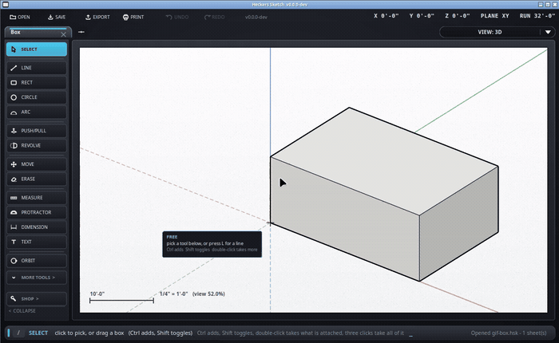

Delete things.
Keyboard: E

A face is not a thing sitting there - it is what a closed run of edges encloses. So rubbing out an edge takes any face that was standing on it, the way SketchUp does it: "faces are erased when you erase their bounding edges, opening and reshaping your geometry". Rub one edge off a box and the two sides meeting along it go with it, and you are looking into an open box.
To put one back, draw the line again along where it was. The faces come back with it, and a side traced back into a box rejoins the box rather than sitting loose on top of it. That is SketchUp's healing and it is the only way back to a face you meant to delete and then did not.
The eraser takes edges, and takes a face only by taking the edges that hold it up - which is SketchUp's arrangement: "The Eraser tool doesn't allow you to erase faces." Click a bare face with it and nothing goes; the bar along the bottom says so.
To remove a face on its own, right-click it and choose Erase, or pick it with the select tool and press Delete. Both leave every edge standing, so what you get is an open box with a complete wireframe lid. Undo brings anything back.